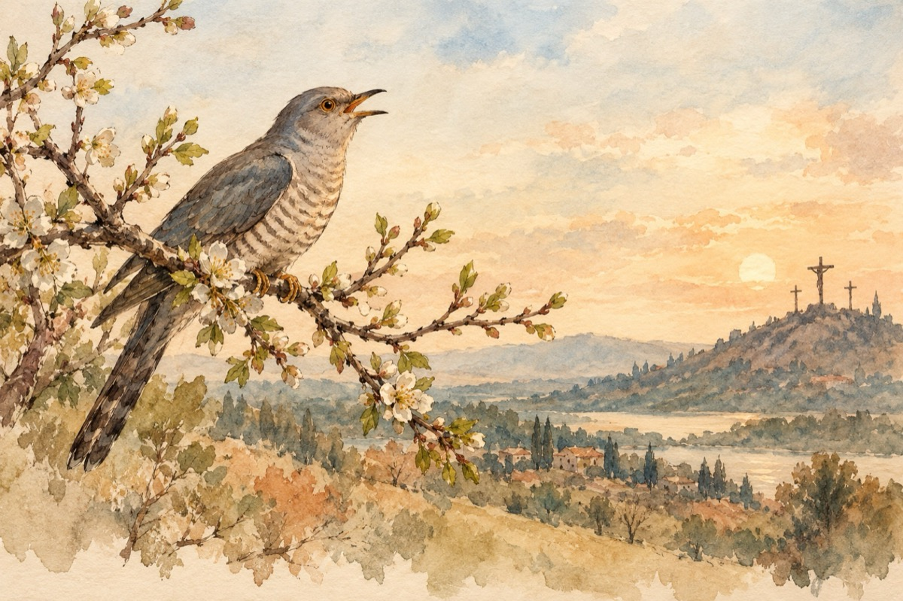

De sărbători
A cântat cucul din nou
Vechilor ascultători
Puilor ieșiți din ou
Acuma de sărbători!
Când Isus e judecat
De oamenii timpului
Domnul fără de păcat
Supus aspru chinului!
Pe cruce-a fost răstignit
Și-nțepat de suliță
Unde viața-i s-a sfârșit
În chin și în umilință
Credincioșii-n rugăciuni
Se închină de iertare
Rugându-se Domnului
Să-i ierte, pentru faptele murdare!
Vasile Groza